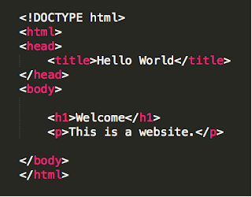

Whether you are a beginner or an expert in Hyper Text Markup Language (HTML) it is important to follow some best practices in order to keep your HTML documents consistent and organized. With so many elements, attributes, properties, values, and more—there is a lot to learn.Here are 10 HTML best practices to keep in mind when working on your next project.
HTML documents will still work without elements such as html, head, and body. However, the pages will not render correctly in every browser so it's important to be consistent using the proper document structure. Example:
When creating an HTML document, the first thing to declare is the doctype. This will tell the browser the standards you are using to render your markup correctly. The doctype goes before the html tag at the top of the page. If you are unsure about what declaration to use, W3.org provides information on choosing the right doctype.
To avoid encountering validation errors always remember to have a closing tag for every tag you create.
It may seem like an easy route to place styling in line with the code instead of creating an external style sheet. However, inline styles are not a good coding practice because it makes it harder to update and maintain a website. Instead, keep your styles separate from your HTML mark-up.
It is not required to have an alt attribute with images, which makes it easy to ignore. However, it is important to have a meaningful alt attribute for validation and accessibility reasons. The alt attribute provides context to screen readers so it should be descriptive as to what the image contains.
Instead of waiting until you are finished with your HTML document, validate your code multiple times as you work. This will help save some time in the end by identifying errors early on, especially if your document is lengthy. One popular HTML validator to use is W3C's markup validation service.
Although external style sheets can be placed anywhere in the HTML document, it is best practice to place them within the "head" tag. This will allow your page to load faster.
Each section of your web page should be built using the most appropriate HTML5 tag for the content. It's best to avoid excessive use of generic tags, such as "div", when there could be a more descriptive tag for the job such as "section", "article", and so on.
Your HTML markup can be written in lowercase or uppercase and the web page will render correctly. However, it is best practice to keep tag names in lowercase because it is easier to read and maintain.
HTML documents can become complicated, especially for webpages with a lot of content. To reduce the size of your pages, check for opportunities to further optimize your code once you are finished with your markup.